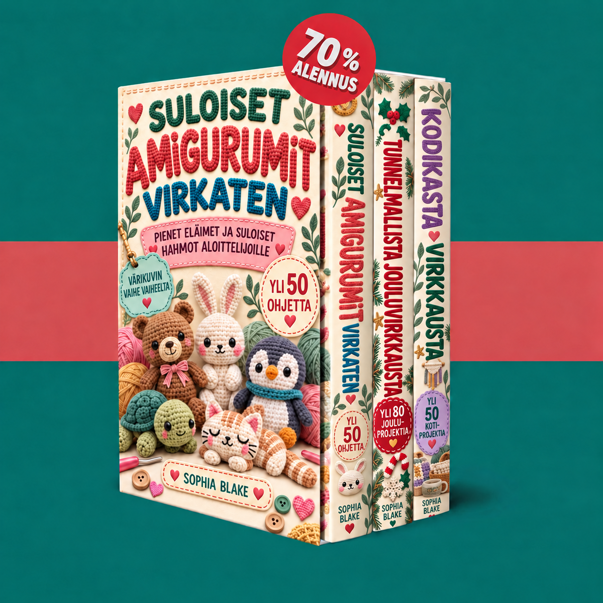

Tervetuloa kokoelmaasi. Tutustu kolmeen kirjaan ja aloita pienistä eläimistä, joulukoristeista tai kodin viihtyisistä projekteista.

Ladataan kirjoja…
Ota JavaScript käyttöön käyttääksesi jäsensivua. Voit avata PDF-tiedostot myös alla olevista linkeistä.